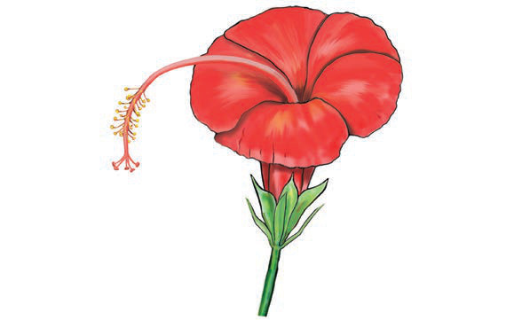

Mimea imegawanyika katika makundi makuu mawili ambayo ni mimea inayotoa maua na mimea isiyotoa maua.
Mimea inayotoa maua
Hii ni mimea inayotoa maua na matunda. Mifano ya mimea hiyo ni ngano, maharage, miembe, njegere, mpunga, alizeti, uaridi na mahindi. Ua hubadilika kuwa tunda. Tunda hutoa mbegu zinazoota na kuwa mche. Mche hukua na kuwa mmea kamili. Sehemu za ua ni pamoja na petali, sepali na kikonyo. Kielelezo 21 kinaonesha sehemu za ua (sepali, petali na kitako cha ua).

Kielelezo namba 21 kinaonesha ua jekundu linalotumika kuonyesha sehemu za ua kama petali, sepali na kikonyo.Kielelezo namba 21: Sehemu za ua
Mimea isiyotoa maua
Baadhi ya mimea haitoi maua lakini inatoa mbegu. Mbegu za mimea hii hazifunikwi ndani ya tunda, kwa mfano mvinje na mfeni. Kielelezo 22 kinaonesha mimea isiyotoa maua (mti wa mvinje na mmea wa feni).